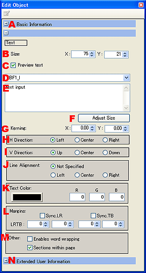

|

|
- 基本情報。
拡大表示するとオブジェクトの基本情報を設定できます。
- オブジェクトサイズ。
テキストオブジェクトの大きさの入力。
※テキストオブジェクトの大きさは、文字のサイズ以下にはできません。
- 文字をプレビューする。
文字列の表示非表示設定。
- フォント選択。
プルダウンの中から使用するフォントを選びます。
尚、本体の仕向け先に応じて使用できるフォントが限られますのでご注意ください。
| DSi本体の仕向け先 |
使用できるフォント |
| 日本、北米、欧州、豪州 |
本体内蔵フォント大
本体内蔵フォント中
本体内蔵フォント小 |
| 中国 |
中国版：本体内蔵フォント大
中国版：本体内蔵フォント中
中国版：本体内蔵フォント小 |
| 韓国 |
韓国版：本体内蔵フォント大
韓国版：本体内蔵フォント中
韓国版：本体内蔵フォント小 |
注意）Editor上では各国版のフォントを混ぜて表示できますが、本体に内蔵されていないフォントは実機上では正しく表示できません。
- テキスト入力エリア。
※テキストの入力の他に以下の機能が使用できます。
・テキストの色を部分的に変更。
・テキスト内に画像ファイルを挿入。
・外字を使う。
- 高さを文字列にあわせる。
テキストオブジェクトの縦のサイズを文字列の高さにあわせます。
- 文字間隔。
表示される文字と文字の、行間字間を設定します。
X が横の字間、Y が縦の行間です。
- 水平方向そろえ。
テキストを表示する水平位置を設定します。
- 垂直方向そろえ。
テキストを表示する垂直位置を設定します。
- 行そろえ。
テキストの行を揃えます。
- 文字色。
テキスト全体の文字色を設定します。
- マージン。
テキストオブジェクトの外周と文字列とのマージンを設定します。
- その他。
- ユーザー拡張情報。
ページ内項目などを設定します。
|